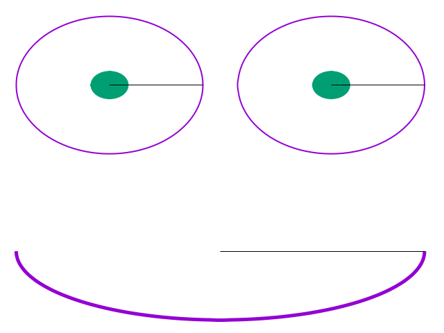

Gnuplot 绘图第五弹-多子图绘制
Table of Contents
在本弹中，主要介绍关于在 Gnuplot 绘制多个子图的一些事。
1 安排子图阵列
set multiplot layout 2, 2 # 将 key 放在 top margin 中，并用 box 包裹起来 set key tmargin left box lt -1 plot besj0(x) plot besj1(x) plot besy0(x) plot besy1(x) unset multiplot

2 手动摆放位置
set multiplot unset key unset tics set polar unset border set size 1, .5 plot [pi:2*pi] 1 lw 5 set origin 0, .5 set size .5, .5 plot 1 lw 2, .2 with filledcurves set origin .5, .5 set size .5, .5 plot 1 lw 2, .2 with filledcurves unset multiplot

3 内嵌子图
set multiplot set object ellipse center .13, 0 size .4, 4 # 此处是一个非常好的利用多个坐标系进行定位的示例，arrow 默认的坐标系是第一坐标系， # 也就是 axis 坐标系，screen 关键字是屏幕坐标系，是在屏幕上位置的百分比 set arrow from .1, 2.1 to screen .22, .4 front head filled size screen 0.03, 15, 135 set samples 1000 set grid set xtics .4 set ytics 10 plot [0:2*pi] exp(x)*sin(1/x) # reset 会将所有的设置重置，包括 samples 设置。此处也可以单独 unset arrow, # object 等内容 reset set origin .2, .4 set size .4, .4 # clear 用于清除新定义的子图区域内的内容，此处主要是为了清除网格线 clear set sample 1000 set nokey set xtics .1 set ytics .5 set bmargin 1 set tmargin 1 set lmargin 3 set rmargin 1 plot [0:.2] exp(x)*sin(1/x) unset multiplot

4 多子图中的标签与箭头
set xrange [-pi:pi] set ytics 0.5 unset key set multiplot layout 2,2 title "Derivatives of Sin(x)" font ",22" # size screen 后面的第一个数字是箭头的长度，15 是前面的角度，135 是后面的角度 set style arrow 1 head filled size screen 0.03,15,135 lt 2 lw 2 set arrow 1 from screen .41,.74 to screen .65,.74 arrowstyle 1 set arrow 2 from screen .87,.64 to screen .87,.3 arrowstyle 1 set arrow 3 from screen .7,.15 to screen .4,.15 arrowstyle 1 set arrow 4 from screen .35,.35 to screen .35,.7 arrowstyle 1 set title "sin(x)" plot sin(x) set title "sin\'(x) = cos(x)" plot cos(x) set title "sin\'\'\'(x) = cos\'\'(x) = -sin\'(x) = -cos(x)" plot -cos(x) set title "sin\'\'(x) = cos\'(x) = -sin(x)" plot -sin(x) unset multiplot